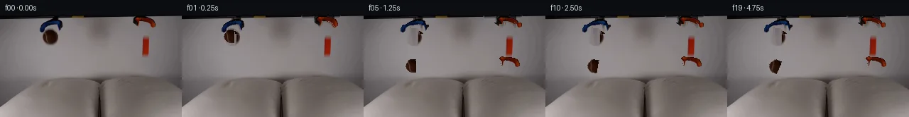

![首帧]()

Round 00
2026-11-04T19:05:04.430521+00:00像素候选变化代码 +640/−0inspection 更新
pixels c0085437e9c8c0a6 · code b888fdde4bfb8be2
查看本轮 generate.py 真实 diff
--- previous/generate.py
+++ current/generate.py
@@ -0,0 +1,640 @@
+#!/usr/bin/env python3
+"""generate.py — 20-frame animation of grabber tools releasing a brown tennis ball and orange block.
+
+Approach:
+ - Pixel-based 2D sprite animation with gravity-driven physics
+ - Objects extracted from frame 0 as sprites; background inpainted from surrounding pillow/table pixels
+ - Grabber tongs open over frames 2–4; objects fall, hit pillow surface (~Y=80), bounce/settle
+ - All drawing: numpy slicing and compositing; no external AI models or engines
+"""
+
+from pathlib import Path
+import numpy as np
+from PIL import Image
+
+# ── helpers ──────────────────────────────────────────────────────────────
+
+def load_frame0(path="first_frame.png"):
+ """Return uint8 (144,256,3)."""
+ return np.array(Image.open(path).convert("RGB"), dtype=np.uint8)
+
+def save_frame(arr, path):
+ Image.fromarray(arr).save(path)
+
+def inpaint_region(arr, mask, feather=0):
+ """Replace masked pixels with a blend of the nearest unmasked neighbour in the same row.
+ Simple horizontal fill: for each row, fill holes with linear interpolation of edge colours.
+ Returns new array (copy)."""
+ out = arr.copy()
+ h, w = out.shape[:2]
+ for y in range(h):
+ row_mask = mask[y]
+ if not row_mask.any():
+ continue
+ # find contiguous hole segments
+ changes = np.diff(np.concatenate([[False], row_mask, [False]]).astype(int))
+ starts = np.where(changes == 1)[0]
+ ends = np.where(changes == -1)[0]
+ for s, e in zip(starts, ends):
+ if s == 0 and e == w:
+ continue # whole row masked, skip
+ left_colour = out[y, max(s - 1, 0)].astype(float)
+ right_colour = out[y, min(e, w - 1)].astype(float)
+ seg_len = e - s
+ for i in range(seg_len):
+ t = (i + 1) / (seg_len + 1)
+ out[y, s + i] = ((1 - t) * left_colour + t * right_colour).round().clip(0, 255).astype(np.uint8)
+ return out
+
+def inpaint_smart(arr, mask, dilate=1):
+ """Inpaint masked area with horizontal interpolation from unmasked edges.
+ For columns: if row-based fill fails, fall back to vertical interpolation."""
+ # First pass: horizontal fill
+ out = inpaint_region(arr, mask)
+ # Second pass: any remaining holes get vertical fill
+ h, w = out.shape[:2]
+ for x in range(w):
+ col_mask = mask[:, x]
+ if not col_mask.any():
+ continue
+ changes = np.diff(np.concatenate([[False], col_mask, [False]]).astype(int))
+ starts = np.where(changes == 1)[0]
+ ends = np.where(changes == -1)[0]
+ for s, e in zip(starts, ends):
+ if s == 0 and e == h:
+ continue
+ top_colour = out[max(s - 1, 0), x].astype(float)
+ bot_colour = out[min(e, h - 1), x].astype(float)
+ seg_len = e - s
+ for i in range(seg_len):
+ t = (i + 1) / (seg_len + 1)
+ out[s + i, x] = ((1 - t) * top_colour + t * bot_colour).round().clip(0, 255).astype(np.uint8)
+ return out
+
+# ── object extraction ────────────────────────────────────────────────────
+
+def extract_tennis_ball_mask(arr):
+ """Return boolean mask (144,256) of brown tennis ball pixels."""
+ r, g, b = arr[..., 0].astype(int), arr[..., 1].astype(int), arr[..., 2].astype(int)
+ mask = (r > 20) & (r > g + 5) & (r > b + 10)
+ # Restrict to known region
+ mask[:2, :] = False
+ mask[17:, :] = False
+ mask[:, :188] = False
+ mask[:, 222:] = False
+ return mask
+
+def extract_orange_block_mask(arr):
… diff truncated; 553 more lines …